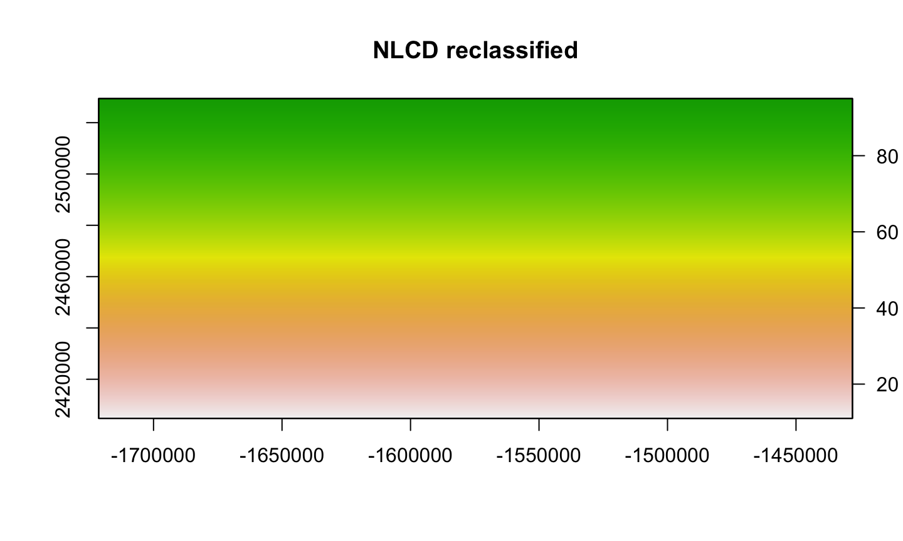
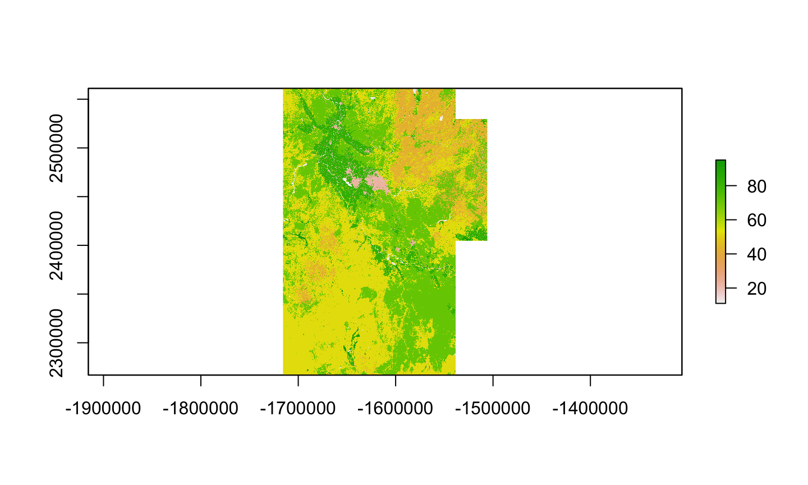
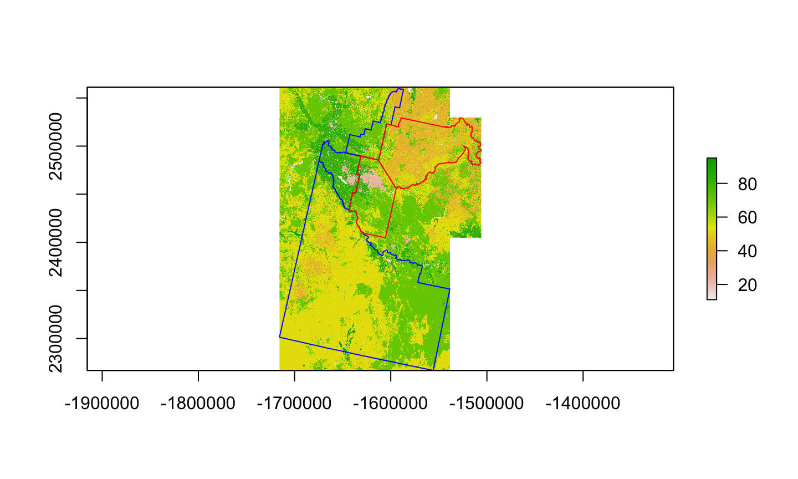

Explore basic raster operations (raster math, moving window analysis)
Learn workflow for raster reclassification
Learn basic approach for merging neighboring rasters
2/17/2020
Learning Objectives
A bit of remote sensing
Deriving vegetation indices largely a function of calculating the right ratios.
Rtreatsrastersas large matrices making math pretty easy
if(!file.exists('data/rs/samples.rds')) {
download.file('https://biogeo.ucdavis.edu/data/rspatial/rsdata.zip',
dest = 'data/rsdata.zip')
unzip('data/rsdata.zip', exdir='data')}
Load an image
raslist <-paste0('data/rs/LC08_044034_20170614_B', 1:11, ".tif")
landsat <- stack(raslist)
landsatRGB <- landsat[[c(4,3,2)]]
landsatFCC <- landsat[[c(5,4,3)]]
identical(crs(landsat), crs(landsatRGB))
## [1] TRUE
identical(crs(landsatRGB), crs(landsatFCC))
## [1] TRUE
Plot the image
par.orr <- par() par(mfrow =c(1,2)) plotRGB(landsatRGB, axes=TRUE, stretch="lin", main="Landsat True Color Composite") plotRGB(landsatFCC, axes=TRUE, stretch="lin", main="Landsat False Color Composite")

par(par.orr)
Calculate Normalized Difference Vegetation Index
NDVI is a commonly used expression of “greenness” used to characterize productivity
Operationally just a series of cell-wise arithmetic
#Landsat NIR = band 5, red = 4 NDVI.numerator <- landsat[[5]] - landsat[[4]] NDVI.denominator <- landsat[[5]] + landsat[[4]] NDVI <- NDVI.numerator/NDVI.denominator
Plot NDVI

Raster math continued
More complex operations possible
rescaling data
NDVI.centered <- NDVI - cellStats(NDVI, "mean") plot(NDVI.centered, col=rev(terrain.colors(20)), main = "NDVI (centered)")
Manual Scaling
NDVI.scaled <- (NDVI - cellStats(NDVI, "mean"))/cellStats(NDVI,"sd") plot(NDVI.scaled, col=rev(terrain.colors(20)), main = "NDVI (scaled)")

Using scale in raster
rasterpackage recreates a number of generic functions forRasterobjects
NDVI.scaled2 <- scale(NDVI) plot(NDVI.scaled2, col=rev(terrain.colors(20)), main = "NDVI (scaled)")

Reclassifying rasters
Useful for converting continuous rasters into categorical (or ordinal) data
Thresholding based on a minimum value
veg <- reclassify(NDVI,cbind(-Inf, 0.4,NA)) plot(veg, col=rev(terrain.colors(20)), main = "Vegetation")
Reclassifying (cont’d)
- Based on percentiles in the data
ndvi.percentile <- quantile(NDVI, probs = seq(0,1, 0.1), names=FALSE)
#build a reclassification matrix
perc.rcl.df <- NULL
for (i in 1:length(ndvi.percentile)){
perc.rcl.v <- c(ndvi.percentile[i], ndvi.percentile[i+1], i)
perc.rcl.df <- rbind(perc.rcl.df, perc.rcl.v)
rownames(perc.rcl.df) <- NULL
}
perc.rcl.df[11,2] <- Inf #set the upper limit
ndvi.perc.recl <- reclassify(NDVI, perc.rcl.df)
Reclassified
plot(ndvi.perc.recl, col=rev(terrain.colors(20)), main = "Percentiles")
Reclassifying categorical maps
Useful for land cover, vegetation, etc
Need to create a lookup table for
reclassify
NLCD
<<<<<<< HEAD
42ac145af02b1ca7d240b4ca86db65e6866b2208
NLCD reclassified
Let’s reclassify the developed categories
Create a lookup table based on the original values in the NLCD
use
greplto find and replace the developed categories
original.val <- unique(nlcdAB)
#reclassify developed categories
reclass.val <- ifelse(grepl("^2", original.val), "21", original.val)
reclass.tabl <- matrix(c(as.numeric(original.val), as.numeric(reclass.val)), ncol = 2)
nlcd.reclass <- reclassify(nlcdAB, reclass.tabl)
Reclassified NLCD

Mosaicing rasters
Lots of satellite imagery comes in “tiles”
Speeding up processing often requires “tiling”
Mosaicing allows us to put them back together
Using merge to combine NLCD
when objects have the same origin and extent you can use
raster::mergein areas where objects overlap, priority is based on the order of the arguments
setting the
toleranceoption can relax the origin and extent enforcement
The merged NLCD dataset for the Treasure Valley
nlcdmerge <- merge(nlcdAB, nlcdCGO) plot(nlcdmerge)

Using raster::mosaic
similar to
mergeAllows you to use a function (e.g., mean, max, min) when cells overlap
can use
do.callwhen you have a large list of rasters
nlcd.mosaic <- mosaic(nlcdAB, nlcdCGO, fun = min)
nlcd.list <- list(nlcdAB, nlcdCGO)
names(nlcd.list)[1:2] <- c('x', 'y')
nlcd.list$fun <- mean
nlcd.list$na.rm <- TRUE
nlcd.mos <- do.call(mosaic, nlcd.list)
NLCD mosaic
